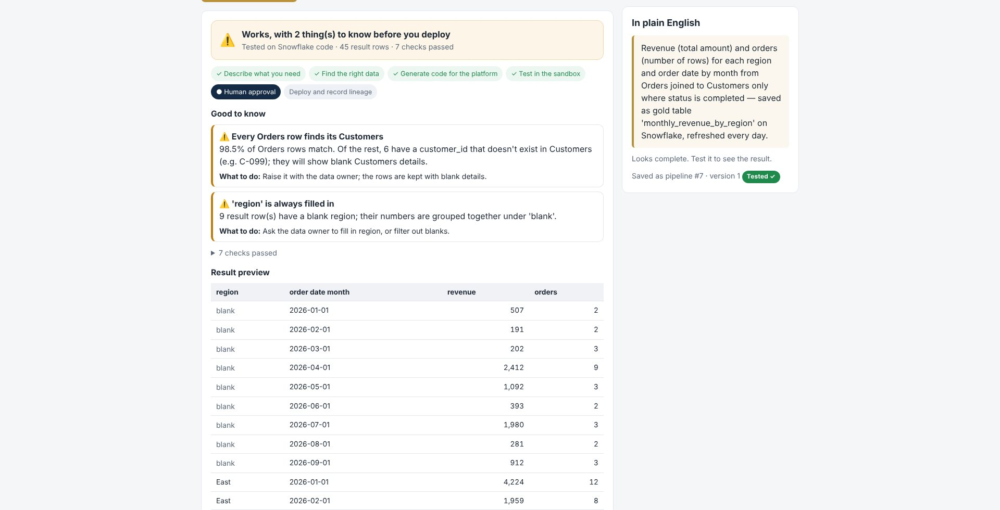
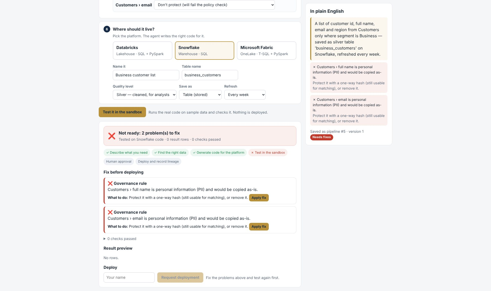
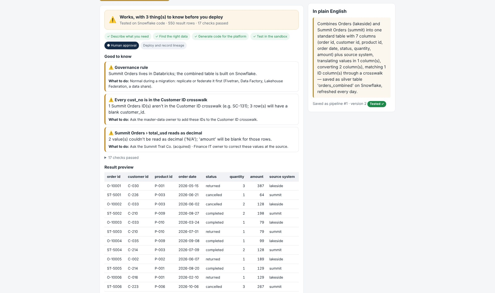
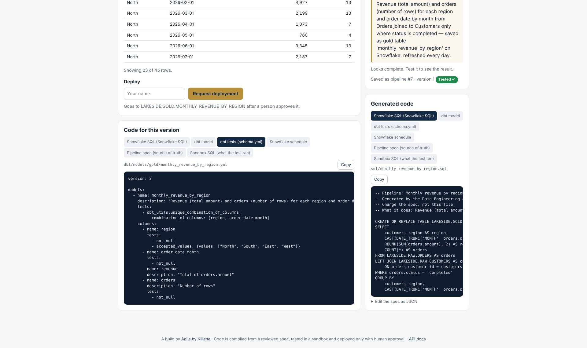

In most companies the people who need data can’t build pipelines, and the people who can are a queue. Handing that gap to an AI that writes SQL freehand just moves the risk: a wrong join quietly doubles a revenue number, or a customer’s email lands in a dashboard. So I built this agent the way I believe AI belongs in data work — the AI translates the request into a small, typed spec; tested code turns the spec into SQL, PySpark and dbt; a sandbox proves it on sample data; and a person approves every deployment.
Built for three people
The business user
Asks in plain English or uses the six-step builder — no code, no SQL. Gets a plain-English summary, a checklist of what to know, and one-click Apply fix buttons.
The developer
Flips one switch for the generated SQL, PySpark, dbt model and tests, the schedule file, the spec JSON, and exactly how every check was measured.
The approver
Sees what will deploy, where, what the sandbox found and the files that will be committed — then approves, or rejects with a reason.
My five-layer framework, made real
1 · Interaction
A guided builder, plain-English chat, a data catalog browser, an approvals queue and a REST API with interactive docs.
2 · Orchestration
Turns intent into a spec and moves it through one state machine: draft → tested → waiting for approval → live. Failed checks come with fixes it can apply itself.
3 · Tool calling
One connector interface for Databricks, Snowflake and Microsoft Fabric. Each names tables its own way and gets its own schedule: an Asset Bundle job, a Snowflake Task, a Data Factory pipeline.
4 · Code sandbox
Runs the compiled code in an isolated database holding only sample data, with a hard time limit, then checks data quality and compliance.
5 · Information
A metadata catalog with friendly names, owners, freshness and PII / Confidential tags; dataset and column-level lineage; run history; and governance tags that carry through to every table the agent publishes.
What the sandbox catches
The demo data has real-world problems planted on purpose. Each one is found, explained in plain English, and paired with a fix.
| The problem | What the agent says — and does |
|---|---|
| A join that doubles your totals | “Products (raw) has more than one row for P-007… Totals would be overstated.” Fails the test, and Apply fix switches to the certified one-row-per-product table. |
| Personal information leaving the source | Customer names and emails are tagged PII. The pipeline can’t pass until they’re protected with a one-way hash, and PII never appears in any preview — to people or to the model. |
| Orders with no customer | “98.5% of Orders rows match… 6 have a customer_id that doesn’t exist in Customers.” Kept, flagged, and never silently dropped. |
| Stale data | A source loaded six days ago can’t quietly feed a daily report: the check names the owner to ask. |
| Everyday mistakes | Misspelled values (“did you mean completed?”), totalling a text column, unknown columns, reading across platforms, a raw table when a certified one exists. |

Built for acquisitions and platform moves
When a company is acquired, the hard part isn’t copying its tables. It’s proving nothing was lost, translated wrongly or counted twice. Migration mode takes the acquired company’s data through four stages, all behind the same sandbox and approval gates.
- Onboard their tables.Paste a schema export; columns are typed for your platform and anything that looks like personal information is tagged PII automatically.
- Conform their data to yours.Map their columns onto your standard model, convert text dates and amounts, translate their codes (“Closed” becomes “completed”) and swap their customer numbers for yours through a crosswalk.
- Prove it reconciles.Every source row arrives exactly once, totals match to the cent, unreadable values and unmatched IDs are counted with examples, and customers who exist in both companies are caught before they’re counted twice.
- Prove the old reports still match — then move.Paste a legacy report’s SQL: the old query and the new pipeline run on the same data and every row is compared, and the result goes in front of the approver. To change platforms, every pipeline recompiles for Databricks, Snowflake or Fabric and old and new tables are reconciled.

The governance, built in
- No freehand code. Claude fills in a typed spec. A deterministic compiler writes every line of SQL, PySpark and dbt — the same spec always produces the same code.
- Tested version only. Only the exact version that passed the sandbox can be requested. Change anything and it goes back to draft; a pending request is cancelled.
- Re-tested at approval. Approval re-runs the sandbox. If anything fails now, nothing deploys — every control fails closed.
- Separation of duties. The person who asked can’t approve their own deployment, and names that identify an AI, a bot or an automated system are refused.
- Bounded authority. Claude can read the catalog, draft and test pipelines, and request a deployment. It has no tool to deploy, approve, change the catalog or run arbitrary queries.
- Human-validated answers, audit trail, limits. Every AI answer waits for review with a grounding check on its numbers; every step is in an append-only audit log; a limiter and kill switch cap usage, and the builder keeps working when AI is off.
One governance, three platforms
The coaching card tells the whole story on one page: the gap, the trusted data flow, what the sandbox catches, and the controls that make it safe.
![Data Engineering Agent coaching card by Wendell Killette, Agile by Killette. AI accelerates, controls protect, humans approve. From business request to trusted data. The gap in every data team: the people who need data can't build pipelines, and the people who can are a queue; freehand AI just moves the risk. The trusted data flow: request, spec, compile, sandbox, approve, deploy. What the sandbox catches: doubled totals from a bad join, personal information, orders with no customer, stale data, everyday mistakes. The governance, built in: no freehand code, tested version only, re-tested at approval, separation of duties, bounded authority, full audit trail. By the numbers: 3 platforms, 5 code outputs per spec, 69 automated tests, 0 lines the AI writes freehand, 100% of deployments approved by a named human.](de-card-coaching.jpg)
Why there are three cards that look almost the same. They’re meant to. Put them side by side and only two things change: the panel on the right and the list of files. Everything that makes the agent safe — the sandbox, the approval gate, separation of duties, the audit trail — is identical on every platform. A Databricks team, a Snowflake team and a Fabric team get the same controls. Only the platform details adapt.
Here is everything that changes, in one place:
| Databricks | Snowflake | Microsoft Fabric | |
|---|---|---|---|
| Table name | lakeside.gold.monthly_revenue | LAKESIDE.GOLD.MONTHLY_REVENUE | lakeside_wh.gold.monthly_revenue |
| SQL | Databricks SQL on Unity Catalog | Snowflake SQL | Fabric Warehouse T-SQL |
| PySpark | Notebook | Not needed | Lakehouse notebook |
| Schedule | Asset Bundle job (databricks.yml) | Snowflake Task (task.sql) | Data Factory pipeline (pipeline.json) |
| Deploys as | CREATE OR REPLACE | CREATE OR REPLACE | CREATE TABLE AS SELECT |
| Sandbox, approval, audit | Identical on all three. That’s the point. | ||
For developers
One switch reveals everything. From one spec the agent generates the platform SQL, a PySpark notebook (Databricks and Fabric), a dbt model with tests that follow the grain, the platform’s schedule file, and the exact SQL the sandbox ran.

How it’s built
- A FastAPI service with 32 API operations.Catalog, lineage, runs, compile, pipelines, sandbox tests, fixes, deployment requests, approvals, migration (legacy comparison, reconciliation, re-platforming, schema import), the agent, the review queue, audit and governance — with interactive API docs.
- A spec, a compiler and a sandbox.A typed pipeline spec checked against the catalog; a compiler for Databricks SQL, Snowflake SQL, Fabric T-SQL, PySpark and dbt; and an isolated sandbox that executes it and runs the quality and compliance checks.
- Claude on top, with bounded authority.Thirteen tools: search the catalog, read a dataset, list platforms, draft or revise a pipeline or a migration, test it, apply a fix, compare with legacy SQL, reconcile tables, plan a platform move, and request deployment — which only queues it for a person.
- Built to run and to be checked.PostgreSQL or SQLite, Docker, a Render blueprint, and 69 automated tests — including a scripted stand-in for Claude, so CI needs no secrets.
See it, or talk through it
Built on a fictional retailer’s data as a portfolio reference. Build a pipeline, watch the sandbox catch the problems, approve the deployment yourself — or let’s talk about governed AI for your data teams.
Launch the live sandbox View the source Book a governance callThe sandbox runs on a free instance that sleeps when idle — the first load may take 30–60 seconds to wake. Data resets each time it wakes. Built on fictional data.